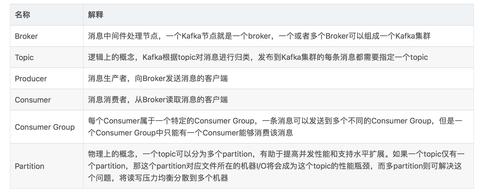
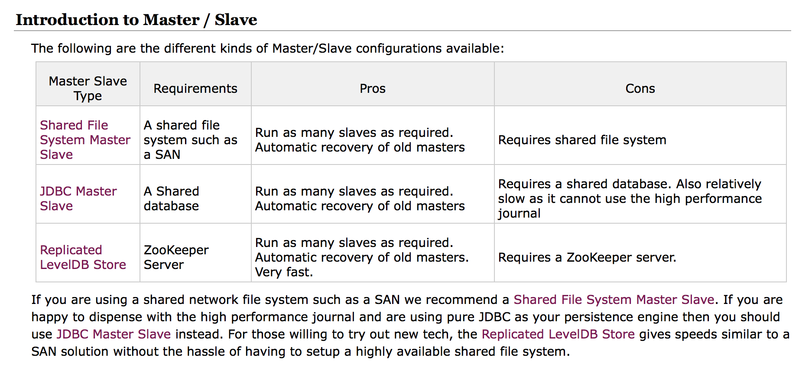

- 01 开篇词：从中间件开始学习分布式.md.html
- 02 走进分布式中间件（课前必读）.md.html
- 03 主流分布式缓存方案的解读及比较.md.html
- 04 分布式一致性协议 Gossip 和 Redis 集群原理解析.md.html
- 05 基于 Redis 的分布式缓存实现及加固策略.md.html
- 06 Redis 实际应用中的异常场景及其根因分析和解决方案.md.html
- 07 Redis-Cluster 故障倒换调优原理分析.md.html
- 08 基于 Redis 的分布式锁实现及其踩坑案例.md.html
- 09 分布式一致性算法 Raft 和 Etcd 原理解析.md.html
- 10 基于 Etcd 的分布式锁实现原理及方案.md.html
- 11 主流的分布式消息队列方案解读及比较.md.html
- 12 搭建基于 Kafka 和 ZooKeeper 的分布式消息队列.md.html
- 13 深入解读基于 Kafka 和 ZooKeeper 的分布式消息队列原理.md.html
- 14 深入浅出解读 Kafka 的可靠性机制.md.html
11 主流的分布式消息队列方案解读及比较
消息队列中间件是分布式系统中重要的组件，主要解决应用耦合、异步消息、流量削锋等问题。它可以实现高性能、高可用、可伸缩和最终一致性架构，是大型分布式系统不可缺少的中间件。
消息队列在电商系统、消息通讯、日志收集等应用中扮演着关键作用，以阿里为例，其研发的消息队列（RocketMQ）在历次天猫 “双十一” 活动中支撑了万亿级的数据洪峰，为大规模交易提供了有力保障。
作为提升应用性能的重要手段，分布式消息队列技术在互联网领域得到了越来越广泛的关注 。本文将介绍四种常用的分布式消息队列开源软件：Kafka、ActiveMQ、RabbitMQ 及 RocketMQ。
1. Kafka
在分布式消息队列的江湖里，Kafka 凭借其优秀的性能占据重要一席。它最初由 LinkedIn 公司开发，Linkedin 于 2010 年贡献给了 Apache基金会，之后成为顶级开源项目。
1.1 Kafka简介
关于 Kafka，网上有很多介绍，经过不断地复制、洗稿、演绎后，难免背离原意，因此，我们还是来看一下官网给出的定义：
Apache Kafka is a distributed streaming platform.
Kafka 作为流平台具有以下三种能力：
- 发布和订阅记录流，类似于消息队列或企业消息系统；
- 具有容错能力，且可以持久化的方式存储记录流；
- 当记录流产生时（发生时），可及时对其进行处理。
Kafka 适用于两类应用：
- 建立实时流数据管道，在系统或应用之间可靠地获取数据；
- 建立对数据流进行转换或反应的实时流应用程序。
kafka 包含四种核心 API。
- Producer API：基于该 API，应用程序可以将记录流发布到一个或多个 Kafka 主题（Topics）；
- Consumer API：基于该 API，应用程序可以订阅一个或多个主题，并处理主题对应的记录流；
- Streams API：基于该 API，应用程序可以充当流处理器，从一个或多个主题消费输入流，并生成输出流输出一个或多个主题，从而有效地将输入流转换为输出流；
- Connector API：允许构建和运行将 Kafka 主题连接到现有应用程序或数据系统的可重用生产者或消费者。例如，关系数据库的连接器可能会捕获表的每一个更改。
1.2 Kafka 特点
作为一种高吞吐量的分布式发布订阅消息系统，Kafka 具有如下特性：
- 快速持久化，可以在 O(1) 的系统开销下进行消息持久化；
- 高吞吐，在一台普通的服务器上可以达到 10W/s 的吞吐速率；
- 完全的分布式系统，Broker、Producer、Consumer 都原生自动支持分布式，自动实现负载均衡；
- 支持同步和异步复制两种 HA；
- 支持数据批量发送和拉取；
- Zero-Copy，减少 IO 操作步骤；
- 数据迁移、扩容对用户透明；
- 无需停机即可扩展机器；
- 其他特性还包括严格的消息顺序、丰富的消息拉取模型、高效订阅者水平扩展、实时的消息订阅、亿级的消息堆积能力、定期删除机制。
1.3 Kafka 部署环境
操作系统
- Windows：虽然 Kafka 可以在部分 Windows 系统运行，但官方并不推荐；
- Unix：支持所有版本的 Unix 系统，以及 Linux 和 Solaris系统。
环境要求
- JDK：Kafka 的最新版本为 2.0.0，JDK 版本需 1.8 及以上；
- ZooKeeper：Kafka 集群依赖 ZooKeeper，需根据 Kafka 的版本选择安装对应的 ZooKeeper 版本。
1.4 Kafka 架构
如上图所示，一个典型的 Kafka 体系架构包括若干 Producer（消息生产者），若干 Broker（Kafka 支持水平扩展，一般 Broker 数量越多，集群吞吐率越高），若干 Consumer（Group），以及一个 Zookeeper 集群。Kafka 通过 Zookeeper 管理集群配置，选举 Leader，以及在 Consumer Group 发生变化时进行 Rebalance。Producer 使用 Push（推）模式将消息发布到 Broker，Consumer 使用 Pull（拉）模式从 Broker 订阅并消费消息。
各个名词的解释请见下表：

1.5 Kafka 高可用方案
Kafka 高可用性的保障来源于其健壮的副本（Replication）策略。为了提高吞吐能力，Kafka 中每一个 Topic 分为若干 Partitions；为了保证可用性，每一个 Partition 又设置若干副本（Replicas）；为了保障数据的一致性，Zookeeper 机制得以引入。基于 Zookeeper，Kafka 为每一个 Partition 找一个节点作为 Leader，其余备份作为 Follower，只有 Leader 才能处理客户端请求，而 Follower 仅作为副本同步 Leader 的数据，如下示意图：TopicA 分为两个 Partition，每个 Partition 配置两个副本。
基于上图的架构，当 Producer Push 的消息写入 Partition（分区） 时，Leader 所在的 Broker（Kafka 节点）会将消息写入自己的分区，同时还会将此消息复制到各个 Follower，实现同步。如果某个 Follower 挂掉，Leader 会再找一个替代并同步消息；如果 Leader 挂了，将会从 Follower 中选举出一个新的 Leader 替代，继续业务，这些都是由 ZooKeeper 完成的。
1.6 Kafka 优缺点
优点主要包括以下几点：
- 客户端语言丰富，支持 Java、.NET、PHP、Ruby、Python、Go 等多种语言；
- 性能卓越，单机写入 TPS 约在百万条/秒，消息大小 10 个字节；
- 提供完全分布式架构，并有 Replica 机制，拥有较高的可用性和可靠性，理论上支持消息无限堆积；
- 支持批量操作；
- 消费者采用 Pull 方式获取消息，消息有序，通过控制能够保证所有消息被消费且仅被消费一次；
- 有优秀的第三方 Kafka Web 管理界面 Kafka-Manager；
- 在日志领域比较成熟，被多家公司和多个开源项目使用。
缺点主要有：
- Kafka 单机超过 64 个队列/分区，Load 会发生明显的飙高现象，队列越多，Load 越高，发送消息响应时间越长；
- 使用短轮询方式，实时性取决于轮询间隔时间；
- 消费失败不支持重试；
- 支持消息顺序，但是一台代理宕机后，就会产生消息乱序；
- 社区更新较慢。
2. ActiveMQ
ActiveMQ 是 Apache 下的一个子项目。之所以把它放在第二位介绍，是因为它官网上的说明：
Apache ActiveMQ is the most popular and powerful open source messaging and Integration Patterns server.
居然没有“之一”，不太谦虚呀，放在第二位，以示“诫勉”。
2.1 ActiveMQ 简介
ActiveMQ 由 Apache 出品，据官网介绍，它是最流行和最强大的开源消息总线。ActiveMQ 是一个完全支持 JMS1.1 和 J2EE 1.4 规范的 JMS Provider 实现，非常快速，支持多种语言的客户端和协议，而且可以非常容易地嵌入到企业的应用环境中，并有许多高级功能。
ActiveMQ 基于 Java 语言开发，目前最新版本为 5.1.5.6。
2.2 ActiveMQ 特点
ActiveMQ 的特点，官网在 Features 一栏中做了非常详细的说明，我做了下翻译，如下：
- 支持多种语言和协议编写客户端。语言包括 Java、C、C++、C#、Ruby、Perl、Python、PHP。应用协议包括 OpenWire、Stomp REST、WS Notification、XMPP、AMQP；
- 完全支持 JMS1.1 和 J2EE 1.4 规范（持久化、XA 消息、事务)；
- 完全支持 JMS 客户端和消息代理中的企业集成模式；
- 支持许多高级特性，例如消息组、虚拟目的地、通配符和复合目的地；
- 支持 Spring，ActiveMQ 可以很容易地嵌入 Spring 应用程序中，并使用 Spring 的 XML 配置机制进行配置；
- 通过了常见 J2EE 服务器（如 Geronimo、JBoss4、GlassFish、WebLogic）的测试，其中通过 JCA 1.5 Resource Adaptors 的配置，可以让 ActiveMQ 自动部署到任何兼容 J2EE 1.4 商业服务器上；
- 支持多种传输协议，如 VM、TCP、SSL、NIO、UDP、Multicast、JGroups 以及 JXTA；
- 支持通过 JDBC 和 Journal 提供高速的消息持久化；
- 从设计上保证了高性能的集群，客户端-服务器，点对点；
- REST API 为消息提供技术无关和基于语言的 Web API；
- AJAX 允许使用纯 DHTML 实现 Web 流对 Web 浏览器的支持，允许 Web 浏览器成为消息传递结构的一部分；
- 获得 CXF 和 Axes 的支持，使得 ActiveMQ 可以很容易地嵌入 Web 服务栈中的任何一个，以提供可靠的消息传递；
- 很容易调用内嵌 JMS Provider，进行测试。
2.3 ActiveMQ 部署环境
相较于 Kafka，ActiveMQ 的部署简单很多，支持多个版本的 Windows 和 Unix 系统，此外，ActiveMQ 由 Java 语言开发而成，因此需要 JRE 支持。
硬件要求
- 如果以二进制文件安装，ActiveMQ 5.x 需要 60M 空间。当然，需要额外的磁盘空间来持久化消息；
- 如果下载 ActiveMQ 5.x 源文件，自行编译构建， 则需要 300M 空间。
操作系统
- Windows：支持 Windows XP SP2、Windows 2000、Windows Vista、Windows 7；
- Unix：支持 Ubuntu Linux、Powerdog Linux、MacOS、AIX、HP-UX、Solaris，或者其它任何支持 Java 的 Unix 平台。
环境要求
- Java 运行环境（JRE），版本 1.7 及以上，如果以源码自行编译构建，则还需要安装 JDK；
- 需要为 JRE 配置环境变量，通常命名为
JAVA_HOME； - 如果以源文件自行编译构建，需安装 Maven 3.0.0 及以上版本，同时，依赖的 JAR 包需要添加到 classpath 中。
2.4 ActiveMQ 架构
ActiveMQ 的主体架构如下图所示。
传输协议： 消息之间的传递，无疑需要协议进行沟通，启动一个 ActiveMQ 便打开一个监听端口。ActiveMQ 提供了广泛的连接模式，主要包括 SSL、STOMP、XMPP。ActiveMQ 默认的使用协议为 OpenWire，端口号为 61616。
通信方式： ActiveMQ 有两种通信方式，Point-to-Point Model（点对点模式），Publish/Subscribe Model （发布/订阅模式），其中在 Publich/Subscribe 模式下又有持久化订阅和非持久化订阅两种消息处理方式。
消息存储： 在实际应用中，重要的消息通常需要持久化到数据库或文件系统中，确保服务器崩溃时，信息不会丢失。
Cluster（集群）： 最常见到集群方式包括 Network of Brokers 和 Master Slave。
Monitor（监控）： ActiveMQ 一般由 JMX 进行监控。
默认配置下的 ActiveMQ 只适合学习而不适用于实际生产环境，ActiveMQ 的性能需要通过配置挖掘，其性能提高包括代码级性能、规则性能、存储性能、网络性能以及多节点协同方法（集群方案），所以我们优化 ActiveMQ 的中心思路也是这样的：
- 优化 ActiveMQ 单个节点性能，包括 NIO 模型选择和存储选择。
- 配置 ActiveMQ 集群（ActiveMQ 的高性能和高可用需要通过集群表现出来）。
在生产环境中，ActiveMQ 集群的部署方式主要有下面两种。
- Master Slave 模式：实现高可用，当主服务器宕机时，备用服务器可以升主，以保证服务的继续。
- Broker Clusters 模式：实现负载均衡，多个 Broker 之间同步消息，以达到服务器负载的可能。
2.5 ActiveMQ 高可用方案
在生产环境中，高可用（High Availability，HA）可谓 “刚需”， ActiveMQ 的高可用性架构基于 Master/Slave 模型。ActiveMQ 总共提供了四种配置方案来配置 HA，其中 Shared Nothing Master/Slave 在 5.8 版本之后不再使用了，并在 ActiveMQ 5.9 版本中引入了基于 Zookeeper 的 Replicated LevelDB Store HA 方案。

关于几种 HA 方案的详细介绍，读者可查看官网说明，在此，我仅做简单介绍。
方案一：Shared Nothing Master/Slave
这是一种最简单最典型的 Master-Slave 模式，Master 与 Slave 有各自的存储系统，不共享任何数据。“Shared Nothing” 模式有很多局限性，存在丢失消息、“双主”等问题。目前，在要求严格的生产环境中几乎没有应用，是一种趋于淘汰的方案，因此，本文就不作介绍了。
方案二：Shared Storage Master/Slave
这是很常用的一种架构。“共享存储”意味着 Master 与 Slave 之间的数据是共享的。为了实现数据共享，有两种方式：
- Shared Database Master/Slave
- Shared File system Master/Slave
（1）Shared File System Master/Slaves
这是基于共享文件系统的 Master/Slaves 模式。此处所谓的“共享文件系统”目前只能是基于 POSIX 接口可以访问的文件系统，比如本地文件系统或者 SAN 分布式共享文件系统（如 glusterFS)。对于 Broker 而言，启动时将会首先获取存储引擎的文件锁，如果获取成功才能继续初始化 transportConnector，否则它将一直尝试获取锁（tryLock），这对于共享文件系统而言，需要严格确保任何时候只能有一个进程获取排他锁。如果你选择的 SAN 文件系统不能保证此条件，那么将不能作为 Master/Slavers 的共享存储引擎。
“Shared File System”这种方式是最常用的模式，架构简单，可靠实用。我们只需要一个 SAN 文件系统即可。
（2）JDBC Store Master/Slaves
显而易见，数据存储引擎为 Database，ActiveMQ 通过 JDBC 方式与 Database 交互，排他锁使用 Database 的表级排他锁。JDBC Store 相对于日志文件而言，通常被认为是低效的，尽管数据的可见性较好，但是 Database 的扩容能力非常弱，无法良好地适应高并发、大数据情况（严格来说，单组 M-S 架构是无法支持大数据的），况且 ActiveMQ 的消息通常存储时间较短，频繁地写入，频繁地删除，都是性能的影响点。我们通常在研究 ActiveMQ 存储原理时使用 JDBC Store，或者在对数据一致性（可靠性、可见性）要求较高的中小型应用环境中使用，比如订单系统中交易流程支撑系统等。但由于 JDBC 架构实施简便，易于管理，我们仍然倾向于首选这种方式。
在使用 JDBC Store 之前，必须有一个稳定的 Database，且为 AcitveMQ 中的链接用户授权“创建表”和普通 CRUD 的权限。Master 与 Slave 中的配置文件基本一样，开发者需要注意 brokerName 和 brokerId 全局不可重复。此外还需要把相应的 jdbc-connector 的 Jar 包复制到 ${acitvemq}/lib/optional 目录下。
方案三： Replicated LevelDB Store
基于复制的 LevelDB Store，是 ActiveMQ 最新的 HA 方案，在 5.9+ 版本中获得支持。相较于方案二中的两种“Shared Storage”模式，本方案在存储和通讯机制上，更符合“Master-Slave”模型。
“Replicated LevelDB”同样允许有多个 Slaves，而且 Slaves 的个数有了约束性的限制，这归结于其使用 ZooKeeper 选举 Master。要进行选举，则需要多数派的“参与者”。因为 Replicated LevelDB Store 中有多个 Broker，从多个 Broker 中选举出一个成为 Master，其他的则成为 Slave。只有 Master 接收 Client 的连接，Slave 负责连接到 Master，并接收（同步方式、异步方式）Master 上的数据。每个 Broker 实例将消息数据保存本地（类似于“Shared Nothing”），它们之间并不共享任何数据，因此，某种意义上把“Replicated LevelDB”归类为“Shared Storage”并不妥当。
特别说明：ActiveMQ 官网警告，LevelDB 不再作为推荐的存储方案，取而代之的是 KahaDB。
2.6 ActiveMQ HA 方案之 Network Bridges 模式
在 2.5 节中介绍的几种 HA 方案，本质上都只有一个 Master 节点，无法满足高并发、大吞吐量的商用场景，因此，ActiveMQ 官方推出了 “网桥”架构模式，即真正的“分布式消息队列”。该模式可应对大规模 Clients、高密度的消息增量的场景；它以集群的模式，承载较大数据量的应用。
如上图所示，集群由多个子 Groups 构成，每个 Group 为 M-S 模式、共享存储；多个 Groups 之间基于“Network Connector”建立连接（Master-Slave 协议），通常为双向连接，所有的 Groups 之间彼此相连，Groups 之间形成“订阅”关系，比如 G2 在逻辑上为 G1 的订阅者（订阅的策略是根据各个 Broker 上消费者的 Destination 列表进行分类），消息的转发原理也基于此。对于 Client 而言，仍然支持 Failover，Failover 协议中可以包含集群中“多数派”的节点地址。
Topic 订阅者的消息，将会在所有 Group 中复制存储，对于 Queue 的消息，将会在 Brokers 之间转发，并最终到达 Consumer 所在的节点。
Producers 和 Consumers 可以与任何 Group 中的 Master 建立连接并进行消息通信，当 Brokers 集群拓扑变化时，Producers 或 Consumers 的个数变化时，将会动态平衡 Clients 的连接位置。Brokers 之间通过“Advisory”机制来同步 Clients 的连接信息，比如新的 Consumers 加入，Broker 将会发送 Advisory 消息（内部的通道）通知其他 Brokers。
集群模式提供了较好的可用性担保能力，在某些特性上或许需要权衡，比如 Queue 消息的有序性将会打破，因为同一个 Queue 的多个 Consumer 可能位于不同的 Group 上，如果某个 Group 实现，那么保存在其上的消息只有当其恢复后才能对 Clients 可见。
“网络转发桥”集群模式，构建复杂，维护成本高，可以在生产环境中使用。
2.7 ActiveMQ 优缺点
优点主要有以下几点。
- 跨平台（Java 编写与平台无关，ActiveMQ 几乎可以运行在任何 JVM 上)；
- 可以使用 JDBC，将数据持久化到数据库。虽然使用 JDBC 会降低 ActiveMQ 的性能，但数据库一直都是开发人员最熟悉的存储介质。将消息存到数据库，看得见摸得着。而且公司有专门的 DBA 去对数据库进行调优，主从分离；
- 支持 JMS 的统一接口；
- 支持自动重连；
- 有安全机制：支持基于 Shiro、JAAS 等多种安全配置机制，可以对 Queue/Topic 进行认证和授权；
- 拥有完善的监控体系，包括 Web Console、JMX、Shell 命令行，以及 Jolokia 的 REST API；
- 界面友善：提供的 Web Console 可以满足大部分需求，此外，还有很多第三方组件可以使用，如 Hawtio。
其缺点主要有以下几点：
- 社区活跃度较低，更新慢，增加维护成本；
- 网络资料显示，ActiveMQ 存在一些莫名其妙的问题，会丢失消息；
- 目前，官方将重心放到 ActiveMQ 6.0 下一代产品 Apollo 上，对 5.x 的维护较少；
- 不适合用于上千个队列的应用场景。
3. RabbitMQ
RabbitMQ 是由 RabbitMQ Technologies Ltd 开发并提供技术支持的开源软件。该公司在 2010 年 4 月被 SpringSource（VMWare 的一个部门）收购。在 2013 年 5 月被并入 Pivotal。事实上 VMWare、Pivotal 和 EMC 同属一家，不同的是 VMWare 是独立上市子公司，而 Pivotal 整合了 EMC 的某些资源，现在并没有上市。
3.1 RabbitMQ 简介
RabbitMQ 是流行的开源消息队列系统，最新版本为 3.7.8。RabbitMQ 是 AMQP（Advanced Message Queuing Protocol）的标准实现。支持多种客户端，如 Python、Ruby、.NET、Java、JMS、C、PHP、ActionScript、XMPP、STOMP 等，支持 AJAX、持久化。用于在分布式系统中存储转发消息，在易用性、扩展性、高可用性等方面表现不俗。
RabbitMQ 采用 Erlang 语言开发。Erlang 是一种面向并发运行环境的通用编程语言。该语言由爱立信公司在 1986 年开始开发，目的是创造一种可以应对大规模并发活动的编程语言和运行环境。Erlang 问世于 1987 年，经过十年的发展，于 1998 年发布开源版本。
Erlang 是一个结构化、动态类型编程语言，内建并行计算支持。使用 Erlang 编写出的应用运行时通常由成千上万个轻量级进程组成，并通过消息传递相互通讯。进程间上下文切换对于 Erlang 来说仅仅只是一两个环节，比起 C 程序的线程切换要高效得多。Erlang 运行时环境是一个虚拟机，有点像 Java 虚拟机，这样代码一经编译，同样可以随处运行。它的运行时系统甚至允许代码在不被中断的情况下更新。另外字节代码也可以编译成本地代码运行。
3.2 RabbitMQ 特点
根据官方介绍，RabbitMQ 是部署最广泛的消息代理，有以下特点：
- 异步消息传递，支持多种消息传递协议、消息队列、传递确认机制，灵活的路由消息到队列，多种交换类型；
- 良好的开发者体验，可在许多操作系统及云环境中运行，并为大多数流行语言提供各种开发工具；
- 可插拔身份认证授权，支持 TLS（Transport Layer Security）和 LDAP（Lightweight Directory Access Protocol）。轻量且容易部署到内部、私有云或公有云中；
- 分布式部署，支持集群模式、跨区域部署，以满足高可用、高吞吐量应用场景；
- 有专门用于管理和监督的 HTTP-API、命令行工具和 UI；
- 支持连续集成、操作度量和集成到其他企业系统的各种工具和插件阵列。可以插件方式灵活地扩展 RabbitMQ 的功能。
综上所述，RabbitMQ 是一个“体系较为完善”的消息代理系统，性能好、安全、可靠、分布式，支持多种语言的客户端，且有专门的运维管理工具。
3.3 RabbitMQ 部署环境
RabbitMQ 支持多个版本的 Windows 和 Unix 系统，此外，ActiveMQ 由 Erlang 语言开发而成，因此需要 Erlang 环境支持。某种意义上，RabbitMQ 具有在所有支持 Erlang 的平台上运行的潜力，从嵌入式系统到多核心集群还有基于云端的服务器。
操作系统
- Windows 系列：支持 Windows NT、Windows 2000、Windows XP、Windows Vista、Windows 7、Windows 8，Windows Server 2003/2008/2012、Windows 95、Windows 98；
- Unix 系列：支持 Ubuntu 和其它基于 Debian 的 Linux 发行版，Fedora 和其它基于 RPM 包管理方式的 Linux 发行版，openSUSE 和衍生的发行版，以及 Solaris、BSD、MacOSX 等。
环境要求：
- RabbitMQ 采用 Erlang 开发，需要安装 Erlang 环境；
- 不同版本的 JDK 支持的 Erlang 和 RabbitMQ Server 的版本也有所不同，建议采用高版本 JDK，避免兼容性问题。
3.4 RabbitMQ 架构
根据官方文档说明，RabbitMQ 的架构图如下所示：
接下来解释几个重要的概念。
- Broker：即消息队列服务器实体。
- Exchange：消息交换机，它指定消息按什么规则，路由到哪个队列。
- Queue：消息队列载体，每个消息都会被投入到一个或多个队列。
- Binding：绑定，它的作用是把 Exchange 和 Queue 按照路由规则绑定起来。
- Routing Key：路由关键字，Exchange 根据这个关键字进行消息投递。
- Vhost：虚拟主机，一个 Broker 里可以开设多个 Vhost，用作不同用户的权限分离。
- Producer：消息生产者，就是投递消息的程序。
- Consumer：消息消费者，就是接受消息的程序。
- Channel：消息通道，在客户端的每个连接里，可建立多个 Channel，每个 Channel 代表一个会话任务。
消息队列的使用过程如下：
- 客户端连接到消息队列服务器，打开一个 Channel。
- 客户端声明一个 Exchange，并设置相关属性。
- 客户端声明一个 Queue，并设置相关属性。
- 客户端使用 Routing Key，在 Exchange 和 Queue 之间建立好绑定关系。
- 客户端投递消息到 Exchange。Exchange 接收到消息后，根据消息的 Key 和已经设置的 Binding，进行消息路由，将消息投递到一个或多个队列里。
有三种类型的 Exchange，即 Direct、Fanout、Topic，每个实现了不同的路由算法（Routing Algorithm）。
Direct Exchange： 完全根据 Key 投递。如果 Routing Key 匹配，Message 就会被传递到相应的 Queue 中。其实在 Queue 创建时，它会自动地以 Queue 的名字作为 Routing Key 来绑定 Exchange。例如，绑定时设置了 Routing Key 为“abc”，那么客户端提交的消息，只有设置了 Key为“abc”的才会投递到队列中。
Fanout Exchange： 该类型 Exchange 不需要 Key。它采取广播模式，一个消息进来时，便投递到与该交换机绑定的所有队列中。
Topic Exchange： 对 Key 进行模式匹配后再投递。比如符号“#”匹配一个或多个词，符号“.”正好匹配一个词。例如“abc.#”匹配“abc.def.ghi”，“abc.”只匹配“abc.def”。
3.5 RabbitMQ 高可用方案
就分布式系统而言，实现高可用（High Availability，HA）的策略基本一致，即副本思想，当主节点宕机之后，作为副本的备节点迅速“顶上去”继续提供服务。此外，单机的吞吐量是极为有限的，为了提升性能，通常都采用“人海战术”，也就是所谓的集群模式。
RabbitMQ 集群配置方式主要包括以下几种。
- Cluster：不支持跨网段，用于同一个网段内的局域网；可以随意得动态增加或者减少；节点之间需要运行相同版本的 RabbitMQ 和 Erlang。
- Federation：应用于广域网，允许单台服务器上的交换机或队列接收发布到另一台服务器上的交换机或队列的消息，可以是单独机器或集群。Federation 队列类似于单向点对点连接，消息会在联盟队列之间转发任意次，直到被消费者接受。通常使用 Federation 来连接 Internet 上的中间服务器，用作订阅分发消息或工作队列。
- Shovel：连接方式与 Federation 的连接方式类似，但它工作在更低层次。可以应用于广域网。
RabbitMQ 节点类型有以下几种。
- 内存节点：内存节点将队列、交换机、绑定、用户、权限和 Vhost 的所有元数据定义存储在内存中，好处是可以更好地加速交换机和队列声明等操作。
- 磁盘节点：将元数据存储在磁盘中，单节点系统只允许磁盘类型的节点，防止重启 RabbitMQ 时丢失系统的配置信息。
问题说明：RabbitMQ 要求集群中至少有一个磁盘节点，所有其他节点可以是内存节点，当节点加入或者离开集群时，必须要将该变更通知给至少一个磁盘节点。如果集群中唯一的一个磁盘节点崩溃的话，集群仍然可以保持运行，但是无法进行操作（增删改查），直到节点恢复。
解决方案：设置两个磁盘节点，至少有一个是可用的，可以保存元数据的更改。
Erlang Cookie
Erlang Cookie 是保证不同节点可以相互通信的密钥，要保证集群中的不同节点相互通信必须共享相同的 Erlang Cookie。具体的目录存放在 /var/lib/rabbitmq/.erlang.cookie。
它的起源要从 rabbitmqctl 命令的工作原理说起。RabbitMQ 底层基于 Erlang 架构实现，所以 rabbitmqctl 会启动 Erlang 节点，并基于 Erlang 节点使用 Erlang 系统连接 RabbitMQ 节点，在连接过程中需要正确的 Erlang Cookie 和节点名称，Erlang 节点通过交换 Erlang Cookie 以获得认证。
镜像队列
RabbitMQ 的 Cluster 集群模式一般分为两种，普通模式和镜像模式。
- 普通模式：默认的集群模式，以两个节点（Rabbit01、Rabbit02）为例来进行说明。对于 Queue 来说，消息实体只存在于其中一个节点 Rabbit01（或者 Rabbit02），Rabbit01 和 Rabbit02 两个节点仅有相同的元数据，即队列的结构。当消息进入 Rabbit01 节点的 Queue 后，Consumer 从 Rabbit02 节点消费时，RabbitMQ 会临时在 Rabbit01、Rabbit02 间进行消息传输，把 A 中的消息实体取出并经过 B 发送给 Consumer。所以 Consumer 应尽量连接每一个节点，从中取消息。即对于同一个逻辑队列，要在多个节点建立物理 Queue。否则无论 Consumer 连 Rabbit01 或 Rabbit02，出口总在 Rabbit01，会产生瓶颈。当 Rabbit01 节点故障后，Rabbit02 节点无法取到 Rabbit01 节点中还未消费的消息实体。如果做了消息持久化，那么得等 Rabbit01 节点恢复，然后才可被消费；如果没有持久化的话，就会产生消息丢失的现象。
- 镜像模式：将需要消费的队列变为镜像队列，存在于多个节点，这样就可以实现 RabbitMQ 的 HA，消息实体会主动在镜像节点之间实现同步，而不是像普通模式那样，在 Consumer 消费数据时临时读取。但也存在缺点，集群内部的同步通讯会占用大量的网络带宽。
3.6 RabbitMQ 优缺点
优点主要有以下几点：
- 由于 Erlang 语言的特性，RabbitMQ 性能较好、高并发；
- 健壮、稳定、易用、跨平台、支持多种语言客户端、文档齐全；
- 有消息确认机制和持久化机制，可靠性高；
- 高度可定制的路由；
- 管理界面较丰富，在互联网公司也有较大规模的应用；
- 社区活跃度高，更新快。
缺点主要有：
- 尽管结合 Erlang 语言本身的并发优势，性能较好，但是不利于做二次开发和维护；
- 实现了代理架构，意味着消息在发送到客户端之前可以在中央节点上排队。此特性使得 RabbitMQ 易于使用和部署，但使得其运行速度较慢，因为中央节点增加了延迟，消息封装后也比较大；
- 需要学习比较复杂的接口和协议，学习和维护成本较高。
4.RocketMQ
RocketMQ 由阿里研发团队开发的分布式队列，侧重于消息的顺序投递，具有高吞吐量、可靠性等特征。RocketMQ 于 2013 年开源，2016 年捐赠给 Apache 软件基金会，并于 2017 年 9 月成为 Apache 基金会的顶级项目。
4.1 RocketMQ 简介
RocketMQ 用 Java 语言实现，在设计时参考了 Kafka，并做出了自己的改进，在消息可靠性上比 Kafka 更好，目前最新版本为 4.3.1。RocketMQ 已经被业界多个大型互联网公司采用。
在阿里内部，RocketMQ 很好地服务了集团大大小小上千个应用，在每年的双十一当天，更有不可思议的万亿级消息通过 RocketMQ 流转（在 2017 年的双 11 当天，整个阿里巴巴集团通过 RocketMQ 流转的线上消息达到了万亿级，峰值 TPS 达到 5600 万），在阿里大中台策略上发挥着举足轻重的作用。
4.2 RocketMQ 特点
RcoketMQ 是一款低延迟、高可靠、可伸缩、易于使用的消息中间件。具有以下特性：
- 支持发布/订阅（Pub/Sub）和点对点（P2P）消息模型；
- 队列中有着可靠的先进先出（FIFO）和严格的顺序传递；
- 支持拉（Pull）和推（Push）两种消息模式；
- 单一队列百万消息的堆积能力；
- 支持多种消息协议，如 JMS、MQTT 等；
- 分布式高可用的部署架构，满足至少一次消息传递语义；
- 提供 Docker 镜像用于隔离测试和云集群部署；
- 提供配置、指标和监控等功能丰富的 Dashboard。
4.3 RocketMQ 部署环境
操作系统
- 推荐使用 64 位操作系统，包括 Linux、Unix 和 Mac OX。
安装环境
- JDK：RocketMQ 基于 Java 语言开发，需 JDK 支持，版本 64bit JDK 1.8 及以上；
- Maven：编译构建需要 Maven 支持，版本 3.2.x 及以上。
4.4 RocketMQ 架构
RocketMQ 是一个具有高性能、高可靠、低延迟、分布式的万亿级容量，且可伸缩的分布式消息和流平台。它由 Name Servers、Brokers、 Producers 和 Consumers 四个部分组成。其架构如下图所示（取自官网）。
NameServer 集群
NameServer 是一个功能齐全的服务器，其角色类似 Kafka 中的 ZooKeeper，支持 Broker 的动态注册与发现。主要包括两个功能：
- Broker 管理。NameServer 接受 Broker 集群的注册信息并且保存下来作为路由信息的基本数据。然后提供心跳检测机制，检查 Broker 是否还存活。
- 路由信息管理。每个 NameServer 将保存关于 Broker 集群的整个路由信息和用于客户端查询的队列信息。然后 Producer 和 Conumser 通过 NameServer 就可以知道整个 Broker 集群的路由信息，从而进行消息的投递和消费。
NameServer 通常也是集群的方式部署，各实例间相互不进行信息通讯。Broker 向每一台 NameServer 注册自己的路由信息，所以每一个 NameServer 实例上面都保存一份完整的路由信息。当某个 NameServer 因某种原因下线，Broker 仍然可以向其它 NameServer 同步其路由信息，Produce、Consumer 仍然可以动态感知 Broker 的路由信息。
Broker 集群
Broker 主要负责消息的存储、投递、查询以及服务高可用保证。为了实现这些功能 Broker 包含了以下几个重要子模块。
- Remoting Module：整个 Broker 的实体，负责处理来自 Clients 端的请求；
- Client Manager：负责管理客户端（Producer、Consumer）和 Consumer 的 Topic 订阅信息；
- Store Service：提供方便简单的 API 接口处理消息存储到物理硬盘和查询功能；
- HA Service：高可用服务，提供 Master Broker 和 Slave Broker 之间的数据同步功能；
- Index Service：根据特定的 Message Key 对投递到 Broker 的消息进行索引服务，以提供消息的快速查询。
Producer 集群
充当消息生产者的角色，支持分布式集群方式部署。Producers 通过 MQ 的负载均衡模块选择相应的 Broker 集群队列进行消息投递。投递的过程支持快速失败并且低延迟。
Consumer 集群
充当消息消费者的角色，支持分布式集群方式部署。支持以 Push、pull 两种模式对消息进行消费。同时也支持集群方式和广播形式的消费，它提供实时消息订阅机制，可以满足大多数用户的需求。
4.5 RocketMQ 高可用实现原理
毫无悬念，RocketMQ 实现高可用（HA）的方案仍然是基于最淳朴的“副本思想”，但与 Kafka、Redis、Etcd 采用的副本机制有所不同：RocketMQ 的 Master 和 Slave 没有 Election 机制，也没有 Failover 机制。
RocketMQ 不具备选举功能，在集群模式下，Master、Slave 角色需预先设置，是固定的；Master 与 Slave 配对是通过指定相同的 brokerName 参数来实现，Master 的 BrokerId 必须是 0，Slave 的 BrokerId 必须是大于 0 的数。一个 Master 下面可以挂载多个 Slave，同一个 Master 下的多个 Slave 通过指定不同的 BrokerId 来区分。当 Master 节点宕机后，消费者仍然可以从 Slave 消费，从而保证生产者已经 Push 的消息不丢失；由于该 Master 宕机，生产者将消息 Push 到其它 Master，不影响可用性。RocketMQ 的 Broker 有 4 种部署方式。
1. 单个 Master 模式
除了配置简单，没什么优点。
它的缺点是不可靠。该机器重启或宕机，将导致整个服务不可用，因此，生产环境几乎不采用这种方案。
2. 多个 Master 模式
配置简单，性能最高，是它的优点。
它的缺点是：可能会有少量消息丢失（异步刷盘丢失少量消息，同步刷盘不丢失），单台机器重启或宕机期间，该机器下未被消费的消息在机器恢复前不可订阅，影响消息实时性。
特别说明：当使用多 Master 无 Slave 的集群搭建方式时，Master 的 brokerRole 配置必须为 ASYNC_MASTER。如果配置为 SYNC_MASTER，则 producer 发送消息时，返回值的 SendStatus 会一直是 SLAVE_NOT_AVAILABLE。
3. 多 Master 多 Slave 模式：异步复制
其优点为：即使磁盘损坏，消息丢失得非常少，消息实时性不会受影响，因为 Master 宕机后，消费者仍然可以从 Slave 消费，此过程对应用透明，不需要人工干预，性能同多 Master 模式几乎一样。
它的缺点为：Master 宕机或磁盘损坏时会有少量消息丢失。
4. 多 Master 多 Slave 模式：同步双写
其优点为：数据与服务都无单点，Master 宕机情况下，消息无延迟，服务可用性与数据可用性都非常高。
其缺点为：性能比异步复制模式稍低，大约低 10% 左右，发送单个消息的 RT 会稍高，目前主宕机后，备机不能自动切换为主机，后续会支持自动切换功能。
4.6 RocketMQ 优缺点
优点主要包括以下几点。
- 单机支持 1 万以上持久化队列；
- RocketMQ 的所有消息都是持久化的，先写入系统 Page Cache，然后刷盘，可以保证内存与磁盘都有一份数据，访问时，直接从内存读取；
- 模型简单，接口易用（JMS 的接口很多场合并不太实用）；
- 性能非常好，可以大量堆积消息在 Broker 中；
- 支持多种消费模式，包括集群消费、广播消费等；
- 各个环节分布式扩展设计，主从 HA；
- 社区较活跃，版本更新较快。
缺点主要有：
- 支持的客户端语言不多，目前是 Java、C++ 和 Go，后两种尚不成熟；
- 没有 Web 管理界面，提供了 CLI（命令行界面）管理工具来进行查询、管理和诊断各种问题；
- 没有在 MQ 核心中实现 JMS 等接口。
5. 几种消息队列的比较
目前，消息队列相关的开源软件非常多，本文仅介绍了生产环境中最常见的 4 种。这些消息队列各有所长，没有哪一种消息队列具备 “一统江湖”的优势，某种程度上，增加了选型的难度。不像分布式缓存和分布式锁，Redis、Etcd 具备“绝对”优势，选型无需纠结。
5.1 RocketMQ 官方评价
所谓实践是检验真理的唯一标准，实际应用中的表现比文字更具说服力。在 RocketMQ 官方文档中，关于 RocketMQ 的研发背景是这样说的：在我们的研究中，随着使用 Queue 和 Topic 的增加，ActiveMQ IO 模块很快达到了瓶颈。我们试图通过节流、断路器或降级来解决这个问题，但效果不佳。所以我们开始关注当时流行的消息解决方案 Kafka。不幸的是，Kafka 不能满足我们的要求，特别是在低延迟和高可靠性方面。
简而言之，ActiveMQ 和 Kafka 的性能都不能满足阿里的超大规模应用场景。在此背景下，阿里自研了 RocketMQ，并捐赠给了开源社区，目前有超过 100 家企业在使用其开源版本。关于 ActiveMQ 、Kafka 以及 RocketMQ 的比较如下所示（取自 RocketMQ 官网文档）：
5.2 对比四大消息队列
消息队列利用高效可靠的消息传递机制进行平台无关的数据交流，并基于数据通信来进行分布式系统的集成。目前业界有很多的 MQ 产品，例如 RabbitMQ、RocketMQ、ActiveMQ、Kafka、ZeroMQ、MetaMq 等，也有直接使用数据库 Redis 充当消息队列的案例。而这些消息队列产品，各有侧重，在实际选型时，需要结合自身需求及 MQ 产品特征，综合考虑。
以下是四种消息队列的差异对比（图片源地址）：
参考文献
- RocketMQ 、RabbitMQ、Kafka 以及 ActiveMQ 官方文档；
- 分布式消息队列浅析
- Kafka 简介、基本原理、执行流程与使用场景
- JMS 学习（六）：ActiveMQ 的高可用性实现
- MQ 入门总结（三）：ActiveMQ 的用法和实现